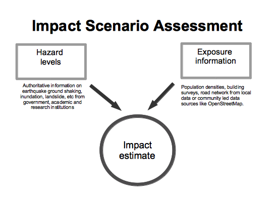
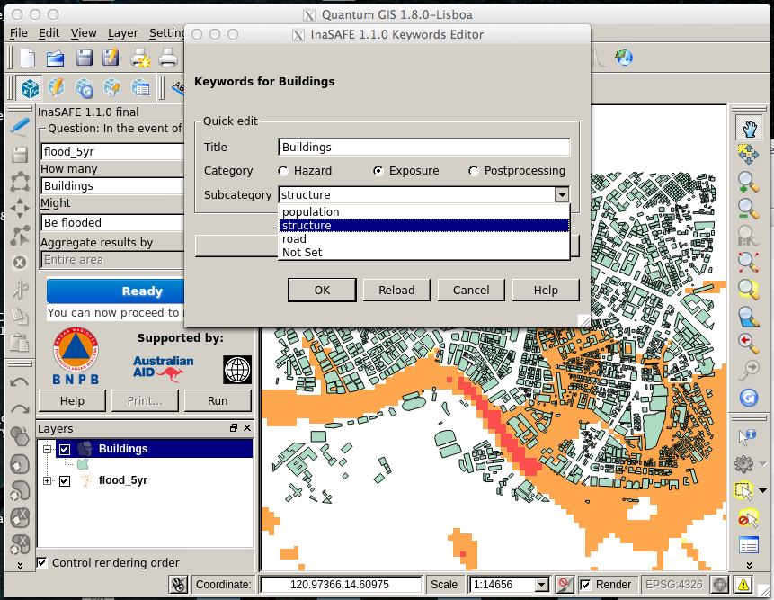
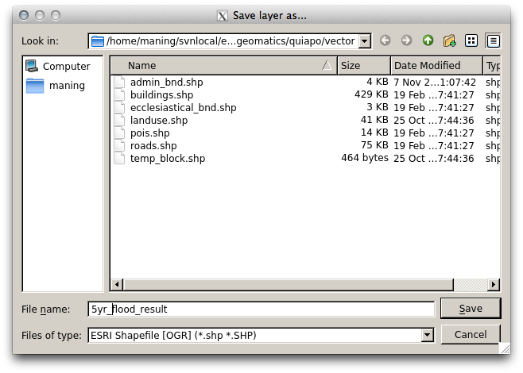

Using InaSAFE plugin in QGIS¶
InaSAFE is a plugin for QGIS. It aims to produce realistic natural hazard impact scenarios for better planning, preparedness and response activities, using hazard and exposure geographic data.
During this training, you will explore the different components of InaSAFE plugin and their usage for an easy-to-use risk and impact scenarios assessments.
Concept¶
To effectively prepare for future floods, earthquakes or tsunami you must first understand the likely impacts that need to be managed. For example, to prepare contingency plans for a severe flood, emergency managers need to answer questions like:
- what are the areas likely to be affected;
- how many people will need to be evacuated and sheltered;
- which schools will be closed;
- which hospitals can still take patients; and
- what roads will be closed?
How does it work?¶
InaSAFE provides a simple but rigorous way to combine data from scientists, local governments and communities to provide insights into the likely impacts of future disaster events. The software is focused on examining, in detail, the impacts by a single hazard would have on specific sectors.
At the end of this material, you will be able to:
- install a plugin in QGIS and understand its usage for spatial analysis;
- understand what are hazard and exposure data and how they can be used to estimate impacts;
- learn how to prepare the data to be able to use it in InaSAFE;
- perform a risk scenario using flood and earthquake data;
- analyze estimated impact of the example scenarios;
- learn how to print and save the result of the simulation.
Install InaSAFE Plugin from QGIS Repository¶
To install the InaSAFE, use the plugin manager in QGIS:
1. Click the menu Plugins ‣ Fetch Python Plugins.
2. Then search for InaSAFE, select it and click the install button. The plugin will now be added to your plugins menu.
Enable InaSAFE Plugin in QGIS¶
1. Once the plugin is extracted in QGIS plugin directory, start QGIS and enable it from the plugin manager. To do this, open Manage Plugins from the Plugins menu on the menu toolbar.
2. A pop-up window that lists all available plugins in your current QGIS project will appear. Type InaSAFE in the filter box. You should see the InaSAFE plugin appear in the list. Now tick the checkbox next to it to enable the plugin.
The plugin now will be added to your Plugins menu.
3. Now you will need to add the InaSAFE panel on your QGIS interface. For that, select Toggle InaSAFE Dock in the InaSAFE plugin scroll list.
The InaSAFE dock panel will then appear on the right of your QGIS window.
It is the main way to interact with the tools that are provided in InaSAFE.
Also, an InaSAFE icon will appear on the QGIS toolbar.
Note
InaSAFE may not install properly depending on your operating system. You may need to install additional Python modules in order to proceed.
Using InaSAFE¶
InaSAFE Options¶
The InaSAFE plugin provides an options dialog which allows you to define various options relating to how InaSAFE will behave.
1. The options dialog can be launched by clicking on the InaSAFE plugin toolbars options icon (as shown below) or from QGIS Plugins ‣ InaSAFE ‣ InaSAFE Options.
2. Then the dialog will appear, looking something like this:
Note
You can click on the Help button at any time and it will open the help documentation browser to this page.
The following options are available on the Options Dialog:
- Only show visible layers in the InaSAFE dock: This option will determine whether (when unchecked) all hazard, exposure and impact layers should be listed in the InaSAFE dock combo boxes; or (when checked) only visible layers.
- Set QGIS layer name from title in keywords: This option will (when enabled) cause QGIS to name layers in the Layers tree, using the title keyword in the layers keywords file. If the layer has no title in its keywords, or it has no keywords at all, the normal QGIS behavior for naming layers will apply.
- Zoom to impact layer on scenario estimate completion: This option will cause the map view to zoom in/out in order to completely contain the InaSAFE impact scenario map output when an analysis is completed.
- Hide exposure layer on scenario estimate completion: This option will cause QGIS to turn off the exposure layer used when InaSAFE completes the current analysis. You can re-enable the layer visibility again by checking its checkbox in the legend.
- Keyword cache for remote data-sources: This option is used to determine where keywords are stored for datasets where it is not possible to write them into a .keywords file. See Keywords System for more information on the keywords system.
- Run analysis in separate thread (experimental): This option cause the analysis to be run in its own thread.
Warning
- It is not recommended to use the threaded implementation at this time. For this reason it is disabled by default.
- Pressing Cancel at any time will close the options dialog and any changes made will not be applied.
- Pressing OK at any time will close the options dialog and any changes made will be applied immediately.
- The exact button order shown on this dialog may differ depending on your operating system or desktop environment.
Adjust Projection¶
Before continuing we need to turn one more QGIS functionality on, to enable all data layers display in one projection (WGS-84).
1. For that, go to QGIS Settings ‣ Project Properties.
2. Click on Coordinate Reference System (CRS) tab in the new dialog box. Tick the Enable on the fly CRS transformation box. And then OK.
Now, any data layer that we will integrate into our project will be adjusted on the same coordinate.
Exploring InaSAFE Plugin¶
1. You can drag and drop the dock panel to reposition it in the user interface. For example, dragging the panel towards the left margin of the QGIS application will dock it to the left side of the screen.
2. Depending on your preference you could show the Layer and InaSAFE panel at the same time.
Or have the Layer and InaSAFE panels in a tab systems.
Or for more convenience, having them on top of each other.
The INASAFE panel contains 3 sections: Questions, Results and Buttons. We will explore those sections one by one.
The Questions Section¶
The intention of InaSAFE is to make it really simple and easy to perform your impact analysis. The Questions area provides a simple way for you to formulate what it is you want to find out? All questions are formulated in the form:
In the event of [hazard] how many [exposure] might [impact].
For example: In the event of a flood how many buildings might be closed?
In order to answer such question, InaSAFE developers have built a number of impact functions that cover risk scenarios such as flood, tsunami, volcanic ash fall, earthquake and so on. In our case, we will use the flood impact function.
To answer our question In the event of a flood, how many buildings might be closed, we need to complete all the areas in the Questions section: hazard, exposure, impact.
Hazard¶
Hazard is the physical event that creates the risk.
A hazard (in the event of) may be represented as a raster layer or as an area (polygon). For example:
- Raster: where each pixel in the raster represents the current flood depth following an inundation event.
- Polygon: where it has been identified that flood has existed in that area (this will not have depth related information)
For our exercise, we will use Quiapo data. Those data are in your computer at quiapo directory.
1. We will add the hazard layer in the INASAFE dock. For that, we need to add the hazard layer from QGIS first. The flood layer is in a raster format, so we will go to the QGIS menu, click on Layer ‣ Add Raster Layer.
2. Once you click on that, a pop-up window will appear where you will have to fetch your flood data. Please select the flood_100yr.tif file from the ~/quiapo/raster/flood directory.
This is a raster data (in GTiff format) that represents flooding depth in Quiapo area for a return period of 100 years. Use the flood.qml as your raster style.
You will notice that the layer filled automatically the hazard area in the InaSAFE dock panel. There are two important things to note when uploading data in InaSAFE.
- Data should follow a keyword metadata system that allows InaSAFE to determine if the layer is a hazard or if it is an exposure.
- The area of analysis should overlap.
Adding keyword metadata¶
You may be wondering how the InaSAFE plugin determines whether a layer should be listed in the In the event of How many combo boxes? The plugin relies on simple keyword metadata to be associated with each layer. Each layer that has a keyword allocating it’s category to hazard will be listed in the In the event of combo. Similarly, a category of exposure in the keywords for a layer will result in it being listed under the How many combo. InaSAFE uses the combination of category, sub-category, units and data-type keywords to determine which impact functions will be listed in the Might combo.
In our exercise, the keywords were already created, so the data could fill automatically the In the event of How many combo boxes. If the keywords were not created in advance, then we will create them by following one of the two steps:
1. Go to the InaSAFE tools on the toolbar, click on the Keyword Editor icon.
Or, open the Plugin menu on QGIS toolbar, click on InaSAFE, then click on the Keyword Editor in the scroll list.
2. Once you click on the Keyword Editor, a dialog box containing the flood data will be prompted. Since the flood data is a hazard layer, pinpoint the Hazard Category. In the Sub-category, we will choose flood [m] because our data represents depth of flood in Manila in meter unit.
3. Then click OK.
Now the data follow the keyword rule, and can be used in the InaSAFE function.
Exposure¶
Exposure is the sum of assets and population that are at risks.
An exposure (How many) layer could be represented, for example, as vector polygon data representing building outlines, or a raster outline where each pixel represents the number of people resident in that cell.
Now, we will add the exposure layer in our InaSAFE project. For that, we need to add the exposure layer to QGIS first. For our exercise, we will use the data that represents buildings.
1. The OSM building layer is in a vector format, so we will go to the QGIS menu toolbar, click on Layer ‣ Add Vector Layer.
Please note that the exposure data should follow the same keyword system that we explained earlier for the hazard data.
We will create it by using the Keyword Editor.
2. Go to the Plugin ‣ InaSAFE ‣ Keyword Editor in the dialog box. Pinpoint the Exposure category.
3. Choose structure in the Subcategory scroll box. Click OK.
Now our OSM building exposure data can be used in INASAFE and was automatically entered in the How many box of the INASAFE dock panel.
Impact Analysis¶
The impact function (Might) will spatially combine the hazard and exposure input layers in order to postulate what the impacts of the hazard will be on the exposure infrastructure or people. By selecting a combination from the In the event of and How many combo boxes, an appropriate set of impact functions will be listed in the Might combo box.
Impact scenarios are predefined depending on what the decision-maker is looking for. For our flood analysis in Jakarta, we only have on predefined impact function which asks: In case of flood event, how many buildings might be temporarily closed? As we see on the previous step, this is filled automatically by default in the InaSAFE panel dock as soon as the hazard [flood] and exposure [buildings] layers are entered correctly.
The Results section¶
1. Now that we have our two input layers and that we know what impacts we would like to assess, click on the Run button at the bottom to start the impact analysis. At the end of the process, figures will be shown in the Results section, a new layer will be added in the QGIS layer panel representing the result of the impact function, and the map will differentiate affected and non-affected building.
2. The result shows total number of buildings and the number of buildings that might be temporarily closed in the event of a flood. Also, there is an Action Checklist where the question: Are the critical facilities still open? And a Note description explaining that buildings are said flooded when the flood level exceeds 1 meter.
Enhancing the Map Output¶
The final output map can be enhanced using cartographic functions in QGIS. Styles can be changed, background layer or other relevant layers can be added, layout can be changed using the Print Composer in QGIS.
If you would like to add a background layer to your map, all you need to do is add a new plugin called OpenLayers Plugin in QGIS and follow the same steps as we did to acquire the InaSAFE plugin.
1. To enable the OpenLayers plugin, go to the QGIS Plugin Manager and select OpenLayers Plugin if it is not yet activated.
2. Once installed you should be able to use background imagery and tiles from Google, Bing, OpenStreetMap and others.
3. For our exercise, let’s add the Bing Aerial view to our map as a background. Make sure that the background is not on top of the other active layers.
Print Results¶
The data shown on the screen can be saved into a PDF file by clicking on Print at the bottom of the InaSAFE panel. The PDF file contains then the legend for the result of the impact assessment, the map created and a table summarizing the results from the impact function.
However, any change that you want to make into the final map document should be done before clicking on the Print button of the InaSAFE dock panel. The print should be only use once the data is exactly as you want it to be displayed.
Save results and QGIS project¶
1. The output layer result of the assessment can be saved by right clicking on the layer.
2. Then Save As a shapefile or a raster. However the keywords and statistics do not get saved.
3. You can also save the project under QGIS so that you can access your current window view anytime needed.
Now that the project is saved under QGIS, you can go back to your work anytime you need. However, the statistical data will be lost whenever the project is closed. To get the data back, you will need to redo the impact analysis process we described above from Run.
Further exercise¶
Using the data in your Quiapo directory answer the following questions with Inasafe:
- In case of flood (100 year) event, how many people might need evacuation?
Explore the other features of InaSAFE.

Table Of Contents
- Using InaSAFE plugin in QGIS